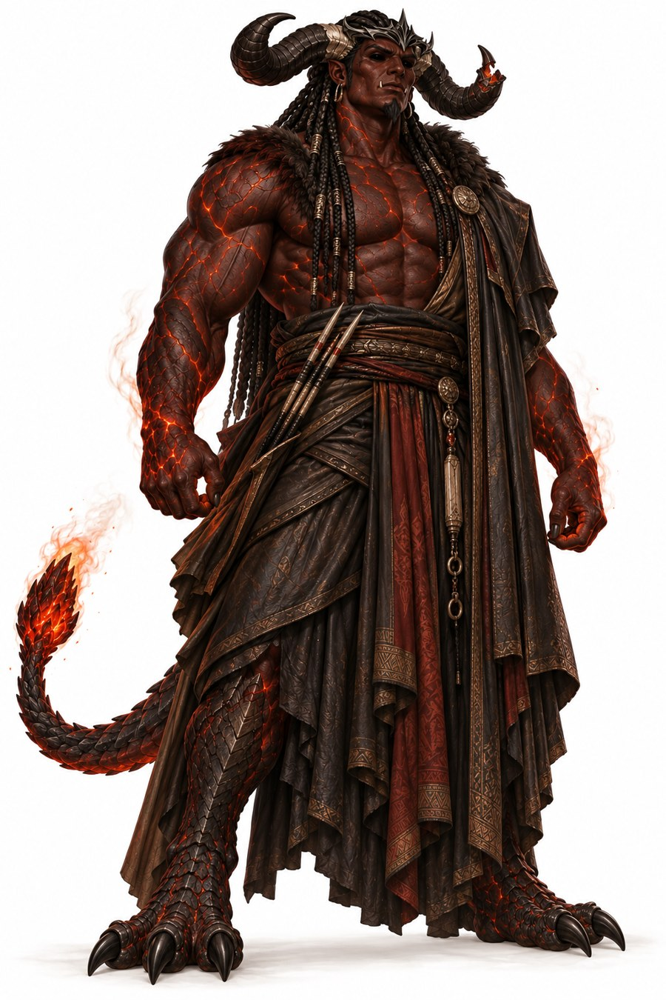

The Vatrajaxo
The children of the fallen, born into a realm their parents made.
This section follows the Ishphaeno Governance Compendium and the Aempaera references. Lines without a tag are settled. Tags mark anything less settled. Names are given in Vatraxu unless a Vatrahu form is named. It is written to be read before the books, so some family detail is left out on purpose.
At a glance
- Names
- Vatrajaħə in Vatrahu and Vatrajaxo in Vatraxu. Older documents call them the Verdoem. Decided
- Who
- The children of the fallen, born after the Fall. Many never saw Aempaera. The Jamija, changed with Sadok at the Fall, are counted as the first of them.
- Horns
- Fixed keratin over a bone core, with no blood supply. They grow from the ankle wings of those born into Toluqavadoth after the Fall. Colour matches the bearer’s own skin in demon form.
- Breath
- They breathe, and can hold their breath about ten times longer than the best human. Decided
- Heart
- The aethaari in the body calcifies into a stone where the heart sits, called Raqal in Vatraxu and Raakal in Vatrahu. Decided
- Craft
- Fire-gifted Vatrajaxo are skilled artisans, not a labour pool. See Materials and Craft.
Who counts

| Group | What they are |
|---|---|
| The eight princes | The sons of the Jamija and the first generation born in Ishphaeno. |
| The Jamija | The first Vatrajaxo, changed at the Fall. |
| The Jamira and Vashaanil | Succubi and incubi, the later descendants. |
| The four broods | The Lamiae, Veskari, Shavari and Kharuvi, born in the early years of Ishphaeno. |
| The Jaxeth | The minion tier, the lowest of the Vatrajaxo. Open |
Not Vatrajaxo
The Vo’im, children of Vatrajarə and humans, are a separate people. So are humans and the Sekh. The Lamiae are Vatrajaxo even though they live on Earth. See The Lamiae.
Open questions
- What the Jaxeth are, and how one becomes or is born one Open
- How the other infernal peoples, such as the Raqeth, the Vozha and the Vethqeth, relate to the Vatrajaxo Open
- Whether the Jamija are counted Vatrajaxo for all purposes or only as a founding exception Open